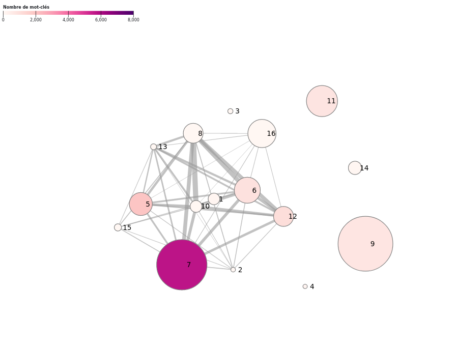
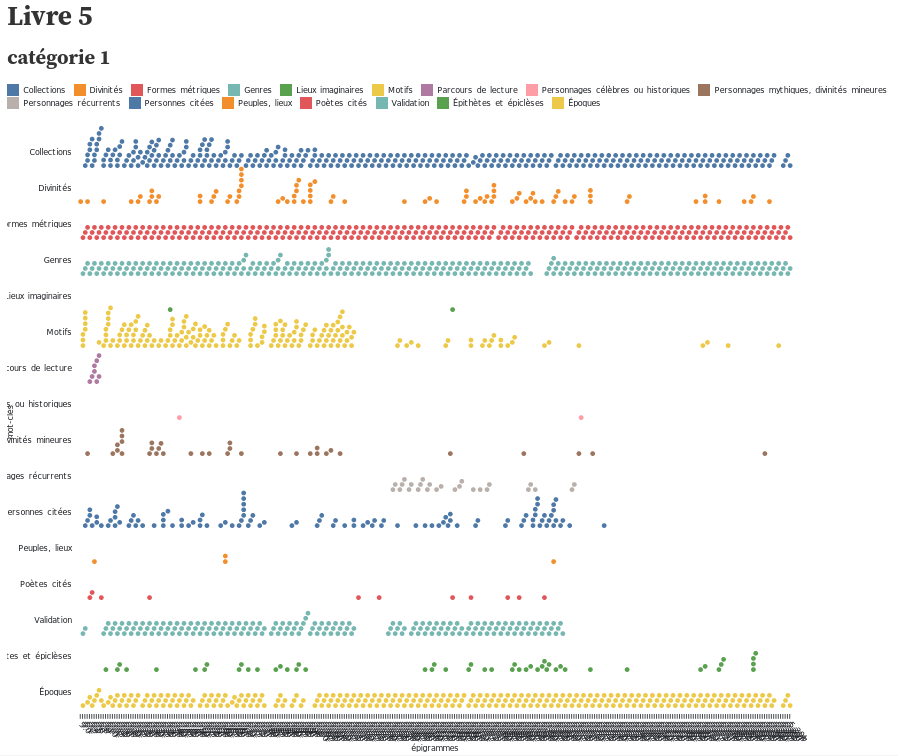

Graphe ton Anthologie Grecque
Visuel 1 : Visualisation des livres
L’Anthologie Grecque est un recueil de textes issu de différentes éditions/compilations. Cette visualisation est une façon d’appréhender les livres qui composent l’Anthologie : quels peuvent être les liens entre ces livres qui se composent chacun d’un nombre variable d’épigrammes ?
Nous proposons de visualiser les liens entres les différents livres de l’Anthologie grâce aux mots-clés qui sont associés à chaque épigramme. Les liens entre les livres sont caractérisés par le nombre de mots-clés en commun entre les livres.
Exemples
Si le livre 1 et le livre 2 ont beaucoup de mots-clés en commun, le trait qui lie ces deux livres sera épais. Si le livre 1 et le livre 3 ont peu de mots-clés en commun, le trait qui lie ces deux livres sera fin.
Des nœuds et des liens
Les 16 livres seraient donc liés entre eux, il y aurait donc 120 liens en tout.
Nous commençons avec les 5 premiers livres — chacun étant considéré comme un nœud ou node —, ce qui fait 10 liens ou hedges.
Informations affichées
Chaque livre (nœud/node) est illustré par une bulle, avec son numéro inscrit à l’intérieur de sa bulle.
La taille des livres (nœuds/nodes) varient en fonction du nombre de mots-clefs présents dans les épigrammes du livre. Leurs couleurs varient en intensité (ou dégradé) selon le nombre d’épigrammes qu’ils comportent.
Un livre avec peu d’épigrammes mais beaucoup de mots-clefs est de couleur claire mais une grande taille, à la différence d’un livre avec beaucoup d’épigrammes mais peu de mots-clefs qui est petit mais de couleur foncée.
Chaque lien (hegde) est une ligne qui lie deux bulles. L’épaisseur de cette ligne varie en fonction du nombre de mots-clefs en commun dans les épigrammes des deux livres.

Pistes d’amélioration
- filter subview with book selection
- better spread view with specifi algorithm (eg force atlas)
- change range for colors
- point to urls
Visuel 2 : Visualisation des mots-clés par catégories au sein d’un livre
Pour un livre de l’Anthologie Grecque, nous souhaitons connaître l’évolution des mots-clefs d’une épigramme à une autre, en partant de la première épigramme jusqu’à la dernière du livre. Il s’agit donc de visualiser les épigrammes d’un même livre selon les mots-clés qui leur sont attribués.
Pour simplifier la visualisation, nous ferons ce rendu sur l’échelle d’une catégorie de mots-clefs :
Nous allons prendre comme témoin le livre V (5) car il a beaucoup d’épigrammes et une thématique facilement exploitable.
Résultat attendu
Un premier rendu est de montrer l’évolution des mots-clefs dans le livre V de la catégorie “Collection” : afficher sur l’axe horizontal les différentes sources (Méléagre, Agatias, etc.) qui ont constitué le livre V. Pour cette catégorie, logiquement, chaque épigramme ne contient qu’un seul mot-clef de la catégorie : en effet chaque épigramme appartient originellement à une collection/compilation particulière.
Un deuxième rendu est de montrer l’évolution des mots-clefs dans le livre V de la catégorie “Motifs” : nous pouvons voir sur l’axe horizontal la présence des mots-clefs selon les épigrammes, leur redondance et les possibles associations récurrentes entre deux motifs ou plus.

Résultats produits
Visuel 1 : Visualisation des livres

Visuel 2 : Visualisation des mots-clés par catégories au sein d’un livre
Catégorie = Collections
Catégorie = Divinités
Catégorie = Motifs
Catégorie = Personnes citées
Toutes catégories confondues